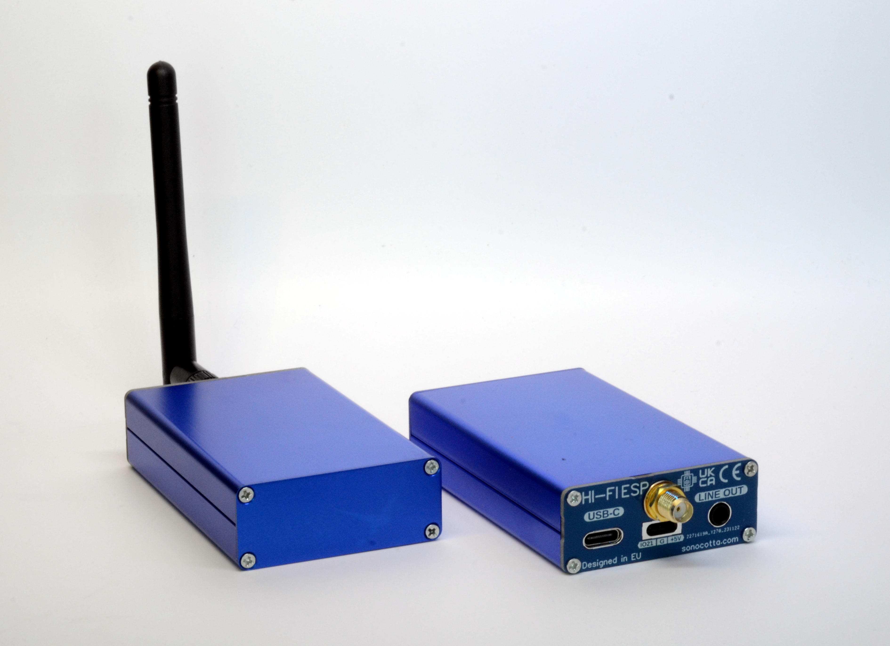
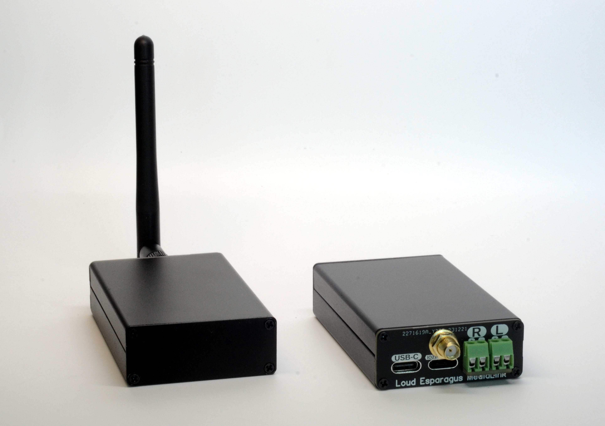

You've reached the installer page of the Squeezelite-ESP32 project, where you can initialize new devices.
Plug the device to your computer using a USB cable, select the device you have and click on the connect button.
By default, the connect button allows setting up wifi credentials for devices already flashed with support for improv-wifi-serial
It is highly recommended to use the 16 bits versions. See the readme for more details
Esparagus HiFi MediaLink is a handy low cost media device that will upgrade your legacy audio system with cutting-edge internet streaming capabilities and enhance your audio experience. It exposes line level output that you can plug into a stereo amplifier. It uses the legendary PCM5100 series DAC with supreme audio quality.
Loud Esparagus is aimed to be paired with small-to-medium sized speakers in a small room. It uses a dual MAX98357 Hi-Fi DAC that will output 3W per speaker. Admittedly not much, but well enough for a kid's room or work place. Due to the D-class amp, it barely uses power and can be paired with a standard USB wall charger.
